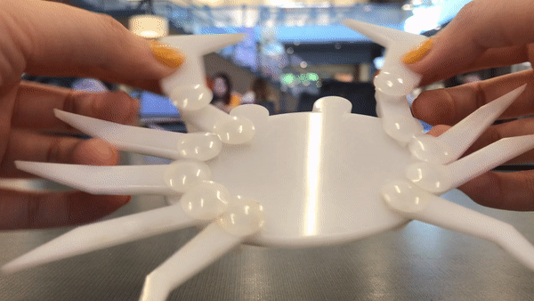
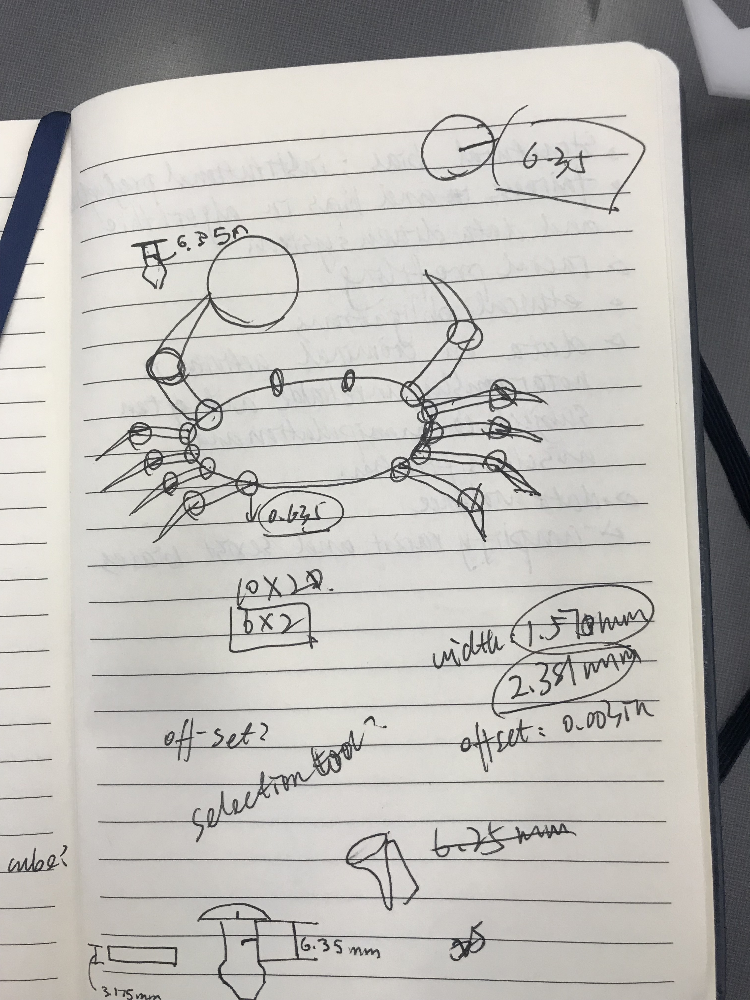

A 9-leg Crab!

Thank you Joshua for answering my questions! Thank you Lucas, D'Marcus, Corynne, and Angel for helping me! Thanks Angel for borrowing a wood board for testing!
Ideation
I ideated several ideas on my notebook, and iterated based on feasibility and desirability. I felt like that a crab could be a fun piece to explore, as they have a lot of moving legs.

Trials and Errors
Then I started to use OnShape to create the shapes. It is a fun but confusing learning process. However,it was rewarding to figure things out with the help from TA and peers! I first created the parts in the OnShape Part Studio, and then assembled them in the Assembly canvas. One of the obstacles that I overcame was figuring out the scale from OnShape to Illustrator. I noticed that every time I imported my DXF files from OnShape and open them in Illustrator, the shapes became larger. I tried many ways but failed to figure out how to avoid the scaling. So I use a stupid method: calculating by how much percent the file got scaled and scale it back accordingly.


Based on Joshua's suggestion, I set the width of my joints 0.635cm, as the size would fit with the rivet he gave me.
Execution
Then, I first tested my design on a 3mm wood board Angel provided (thank Angel!). The settings are: speed-10; power-100; frequency-70. It worked pretty well! the rivet fit!
Finally, I cut with the precious Delrin. The settings are: speed-7; power-100; frequency-70. It worked well except that to take out the tiny pieces, I needed to use a pair of scissors. I assembled them afterward. So fulfilling!
I finally found that I only created 9 joints for assembling the crab legs. Then, it is a 9-leg crab!